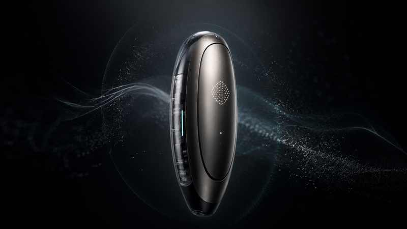
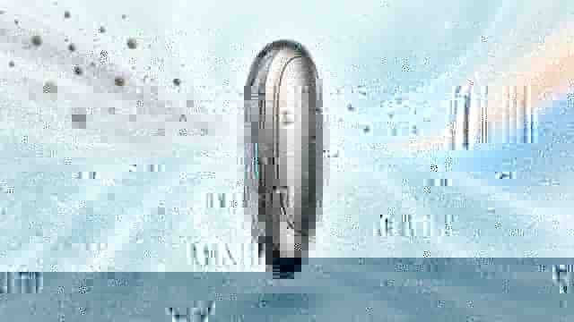

Lee
Partículas finas, humedad, temperatura, compuestos volátiles y calidad acústica del entorno inmediato.
OBJETO / 2040
AURA es una unidad personal de regulación ambiental: observa el aire que te rodea, interpreta señales biométricas y construye un microclima respirable alrededor del usuario.
En 2040, protegerse del entorno ya no significa aislarse de él.
2032—2040
La primera generación de sensores personales sólo advertía: partículas, temperatura, ruido, polen y compuestos volátiles. AURA nació cuando esos datos dejaron de ser un reporte y comenzaron a modificar activamente el espacio inmediato del cuerpo.
La calidad del aire personal se vuelve un dato cotidiano, pero todavía pasivo.
Filtros piezoeléctricos y microventilación permiten actuar sobre volúmenes mínimos de aire.
El dispositivo aprende patrones respiratorios y térmicos sin enviar información personal a la nube.
El microclima personal se convierte en una nueva tipología de objeto cotidiano.
AURA EN OPERACIÓN
Las visualizaciones muestran el principio operativo del objeto: detectar, interpretar y redirigir flujos ambientales en una escala íntima, sin convertir la experiencia en una interfaz llena de pantallas.





NO ES UN PURIFICADOR
Partículas finas, humedad, temperatura, compuestos volátiles y calidad acústica del entorno inmediato.
Combina contexto ambiental con respiración, temperatura cutánea y patrones de exposición.
Filtra, mueve y acondiciona pequeñas cantidades de aire sólo donde hacen falta.
Ajusta perfiles de uso localmente y reconoce rutinas sin construir un perfil remoto.
ANATOMÍA DEL OBJETO
Superficie metálica sensible al tacto y a presión localizada. Sin pantalla permanente.
Cartuchos reemplazables y canales internos para filtrar y dirigir el flujo con mínima turbulencia.
Red de sensores para detectar cambios antes de que el usuario los perciba.
Modelos adaptativos ejecutados en el propio dispositivo; los datos sensibles no necesitan salir de él.
REALIDAD AUMENTADA / iPHONE
El modelo USDZ se abre con Apple Quick Look desde Safari para observar escala, proporción y presencia física directamente en el entorno.
Requiere Safari en iPhone o iPad compatible.